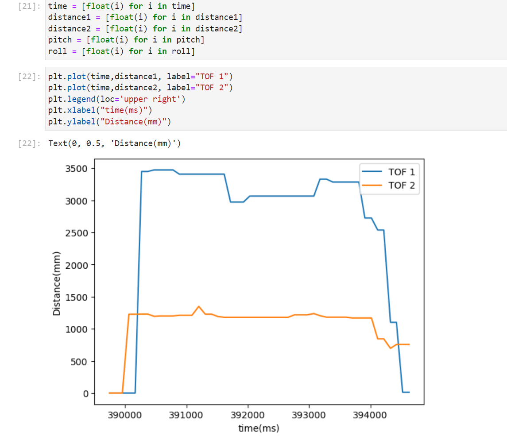
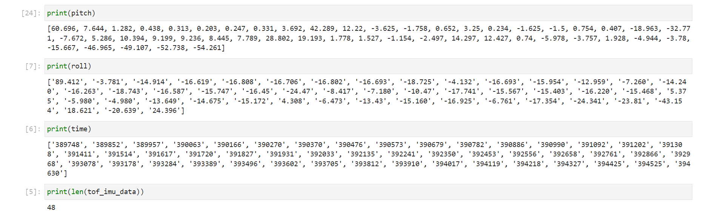
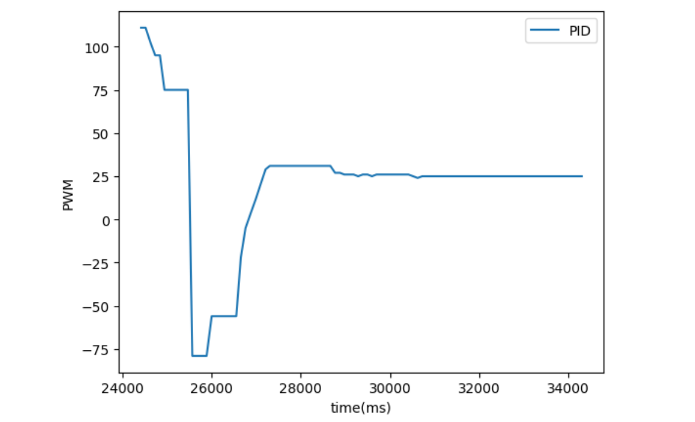
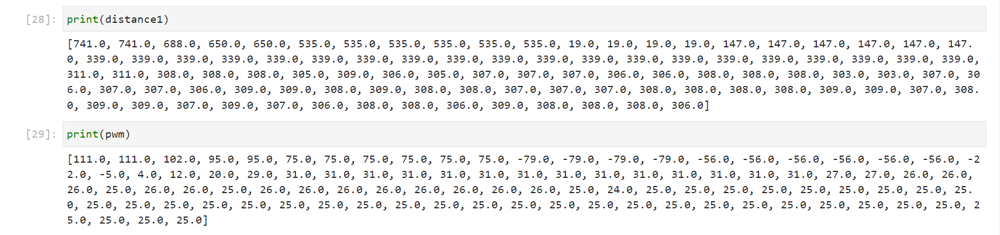
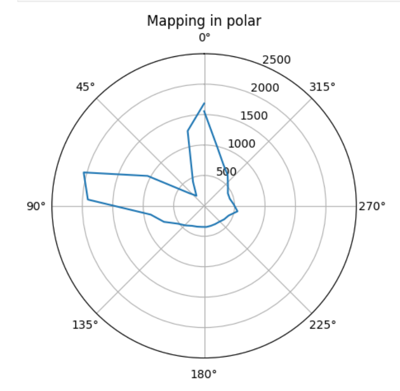
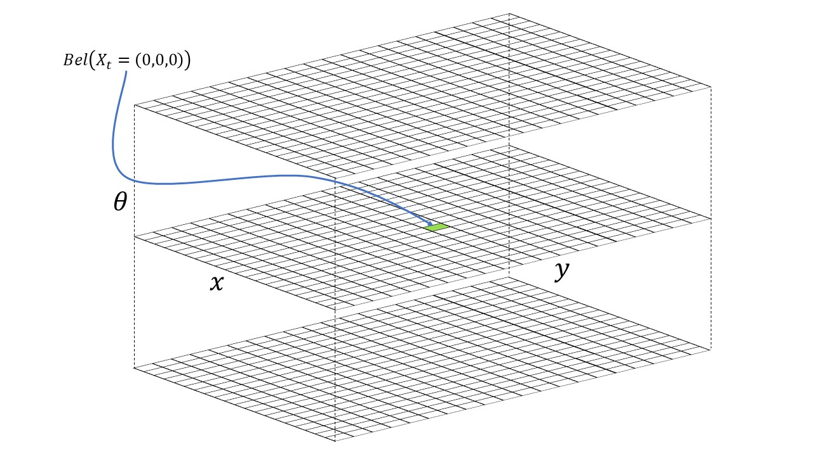

Cornell University ECE5160 Fast Robot
Project Website By Michael Wu
Lab 1: The Artemis board
Introduction
In lab 1, we setup Arudino IDE and tested the Apollo Artemis board over the IDE. The main goal of this lab is to get used to programming the board using Arduino IDE. Following the lab 1 spec, we first installed Arduino with Artemis board support, and then tested five different scripts, including Blinking, Serial, AnalogRead, MicrophoneOutput, and LED control by microphone, observing and verifying their functionalities.
Arduino IDE Setup
The lastest vresion 2.0.3 of Arduino IDE was downloaded from the Arudino official website and installed for the prelab. Following Sparkfun setup instructions, I put an additional URL in Files > Preferences > Additional Board Manager URL, and then installed the lastest version of Apollo3 Board package via Tools > Board > Board Manager and search for Apollo. Note that even after the installation of the Apollo3 package, plugging the Apollo board in the PC through USB, and selecting the correct COM port for the board, there was still not a option of SparkFun BlackBoard Artemis, which was shown in the sparkfun tutorial. Therefore, I choose RedBoard Artemis Nano as my board and confirmed my selection with the TA. As a result, the scripts I ran for the following sections can be in a different directory than described in lab1 tutorial.
Blink
The first script we ran on our board was the example blink script. Going to File > Examples > 01.Basics > Blink, we compiled and executed the blink script without changing the baud rate. In the Blink script, we repetitively write the built-in LED to high, delay for a second, write the LED to LOW, delay for a second to generate a blinky effect. From the testing video below, we could observe that the built-in LED on the board started to to blink by a repetitive sequence of turning on to blue, resting for a second, turning off, and resting for a second. This observation met our expecatation and the blink test was successful.
Lab 1 Video 1: Blink
Serial
The second test Serial output from a serial montior of the Arudino IDE. Serial Output, or UART, sends output stream to the serior monitor of the Arduino IDE. Similar to the printf in C and cout statments in C++, Serial.println() in the Arduino syntax allows printing strings and values of parameters, which could be very helpful for debugging. The only additional step we need to do here is to set a baud rate for data transmission by Serial.begin(115200), where 115200 Hz is the baud rate used in this example. On the other hand, we opened the serial monitor of the Arduino IDE BY clicking on the magnifier-like icon on the top-right corner of the IDE and set the baud rate to 115200 as well.
Note that instead of going to File > Examples > Artemis Examples > Example2_Serial, I had to go to File > Examples > Apollo3 > Example4_Serial to execute the script.
From the video below, we could oberserve that at first 10 lines with increased count numbers were printed, and then the program listened to whatever the user inputted via the keyboard, echoing and printing the input message via the serial monitor. Thus Serial was working!
Lab 1 Video 2: Serial
AnalogRead
In the third example, we tested the functionality of Analog Read. The board we used had an internal termperature sensor and the example AnalogRead program used an internal Analog-Digital-Converter(ADC) to get the temperature readings from the temperature sensor and repeatly printed those readings to the serial monitor.
Note that instead of going to File > Examples > Artemis Examples > Example4_Analog, I had to go to File > Examples > Apollo3 > Example2_AnalogRead to execute the script.
From the video below, we could oberserve that the second column of output -- temp (Counts) -- gradually increased from 33300 to 33500 after my finger covered the temperature sensor of the board, and gradually decreased from 33500 back to 33300 after I removed my finger, which showed the Analog Read Script was working as expected!
Lab 1 Video 3: AnalogRead
PDM
The fourth example used the PDM script which further utilized the Pulse-density-modulation(PDM) microphone on the board. This example script continously captured the sound around the microphone, performed Fast Fourier Transform(FFT), and printed out the loudest audio frequency to the serial monitor.
From the video below, we could oberserve that the loudest frequencies printed out initially were random values, which was caused by background noise when recording the video. However, when I put a sound source, a online tone generator on my mobile phone, close enough to the chip, we could clearly see the printed values were in accordance with and very close to the set values on the tone generator. 434 Hz - 434 Hz, 757 Hz - 755 Hz, 1224 Hz - 1224 Hz, 2162 Hz - 2174 Hz, etc. This demonstrated PDM succcessfully.
Lab 1 Video 4: PDM
Meng Extra: "A" note to turn on LED
For the additional task for 5000-level students, we were required to to program the board such that its built-in LED was turned on when we played a musical "A" note over the spearker, and otherwise remained off. To achieve this effect, I first decided to use A4 (440 Hz) as the detection frequency. Second, I modified the PDM script in last section by (1) change the return type of the printloudest function such that the loudest frequency can be returned.
Original function
void printLoudest(void) {
...
ui32LoudestFrequency = (sampleFreq * ui32MaxIndex) / pdmDataBufferSize;
...
}
Changed function
uint32_t printLoudest(void) {
...
ui32LoudestFrequency = (sampleFreq * ui32MaxIndex) / pdmDataBufferSize;
...
return (ui32LoudestFrequency);
}
(2) Initialize digital pin LED_BUILTIN as an output.
// initialize digital pin LED_BUILTIN as an output.
pinMode(LED_BUILTIN, OUTPUT);
(3) Read return value (loudest frequency) and turn built-in LED on if the returned value is close to 440 Hz.
uint32_t result = printLoudest();
if (result <= 450 && result >= 430) {
digitalWrite(LED_BUILTIN, HIGH);
} else {
digitalWrite(LED_BUILTIN, LOW);
}
From the video below, we could oberserve that the blue LED was turned on only when the output frequency from the tone generator was close to 440 Hz, thus proving the correctness of the code design.
Lab 1 Video 5: Meng Extra: "A" note to turn on LED
Lab 2 : Bluetooth
Introduction
In lab 3, we explore the use of two Time-of
Prelab
Setup
To set up my own PC, I follow the steps in the tutorial.
(1) Install Python3 and Pip.
(2) Install and set up virtual environment.
(3) activate the virtual environment, install python packages, and open Jupyter notebook.
(4) Run the example arduino code to get the MAC address of the board. Update connection.yaml with this MAC address.
(5) Run uuid4() on Jupyter notebook to generate a UUID.
(6) Update base_ble.py for Windows.
(7) Update ble_service and yaml configuration to have the same UUID.
(7) Run demo.ipynb and received a error saying OS not supported (Windows 11). Switched to a lab PC and repeat (1) to (7) to get things working.
Codebase
On the Arduino side, the BLE library is used so that our board serves as a bluetooth peripheral: different BLE UUIDs taking care of different kind of data, BLE service providing three characteristics: BLEFloatCharacteristic, BLEIntCharacteristic, and BLECStringCharacteristic. The user uses different BLE functions along with Estrings to write these characteristics for sending data to PC.
On the PC side, the python scripts set up a BLE controller and can detect the BLE device (Artemis Board). PC can read from characteristics or send data via different cmd commands.
Both sides use RX and TX.
Lab Tasks
configurations
From the pictures below and in the setup, we can see the UUIDs and addresses match in arduino and python files.

Echo
The ECHO command requires a string type of data being sent from the PC to the Artemis Board, as well as an agumented string type of data being sent/echoed back from the board to the PC. To achieve this,
(1) In ble.arduino.ino, add ECHO to the command types and implement the ECHO switch case as a cmd type in handle_command(). The program extracts the string value sent from the PC and store it in a char array. The arugmented string is formed by a concatenation of a prefix, the char array, and a postfix in a straightfforward way. By using the estring library, I clear the tx_estring, append the prefix, char array, and postfix sequentailly, convert to sting to c string and send it back to the PC.
enum CommandTypes
{
...
ECHO,
...
};
...
void handle_command() {
...
switch(cmd_type) {
...
/*
* Add a prefix and postfix to the string value extracted from the command string
*/
case ECHO:
char char_arr[MAX_MSG_SIZE];
// Extract the next value from the command string as a character array
success = robot_cmd.get_next_value(char_arr);
if (!success)
return;
tx_estring_value.clear();
tx_estring_value.append("Robot Says: ");
tx_estring_value.append(char_arr);
tx_estring_value.append(" :)");
tx_characteristic_string.writeValue(tx_estring_value.c_str());
break;
}
}
(2) On the PC side, in a .ipynb file, add a code block that intializes and connects the PC and the board via blue tooth, as well as sending a ECHO CMD command along with a string from the PC to the board. Then the PC receives a string echoed back from the board, we store it and print it out to verify the correctness of our code.
## Echo
# Get ArtemisBLEController object
ble = get_ble_controller()
# Connect to the Artemis Device
ble.connect()
ble.send_command(CMD.ECHO, "Hi Michael!")
s = ble.receive_string(ble.uuid['RX_STRING'])
print(s)
Lab 2 Video 1: Echo
Get Time Millis
(Code shown in the video) At here, we want a new command GET_TIME_MILLIS which requires the robot sent the time elapsed in milliseconds to the PC. To do this, on the robot side, we first clear the estring, and then added time by calling millis(), and write value to the tx string characteristic using the estrings. Note that I convert millis() from unsigned long to int so that estring did not throw a complaint. On the PC side, I call the command and read the received string characteristic.
Lab 2 Video 2: Get Time Millis
Notification Handler
For the notification handler, whose code implementation is in the video below , I write a callback function that takes UUID and bytearray and is activated by ble.start_notify. Therefore, whenever there is an update to the RX string (PC receiving data from the board), the nofitication handler is going to take the bytearray, convert to float, and store the updated data in a global variable. I did not call ble.stop_notify so that the PC side could constantly check and update the global list by the new data sets. At this, get time millis is tested for the handler and we can see the time value is only getting updated when a new ble.sendcommand() is called (a new value is sent from Arduino to PC).
Lab 2 Video 3: Notification Handler
GET_TEMP_5S
For get temperature in 5 seconds, we are asked to send an array of five timestamped internal die temperature readings from the Arduino to the PC. To do this, on the Arduino side, I first clear the tx estring, and then append five pairs of time+temperature data, with a delay of 1 second between colloecting each subsequent pair of data. The maximum estring length is 151, which is enough for five pairs of time+temp data. From the output, we can see the five pairs of time and temperature data are correct. Then I update the notification handler to extract the correct time and temperature data and put them in two respective global lists: time and temperature, whose values meet our expectation as we print them out in the video.
Lab 2 Video 4: GET_TEMP_5S
GET_TEMP_5s_RAPID
For this task, we are asked to send a array of 5 seconds of rapidly collected data. To this end, wo modified the above code snippet by changing the delay in each iteration and adding an additional outer loop. In other words, we collect five pairs of time and temperature data, add them to the estring, send the data, and repeat these three steps for 100 times with a delay of 10 milliseconds between each. The delay time is shortened proportionally to match the requirement of total time of 5 seconds. Printing the list values we can see there are 500 pairs of time and temp data, where time[0] corresponds to temp[0] and so on. This is because each estring has 5 pairs and there are 100 estrings in total. Note that the data are not in time order because we have no guarantee that the PC side will receive everything in the exact same order that the Arduino side sent them.

Lab 2 Video 5: GET_TEMP_5s_RAPID
Limitations
The Artemis Board has 384kB of RAM which means 384000 bytes. Our setup is to send 5 seconds of 16-bit values taken at 150 Hz, which means 2 byte * 5 seconds * 150 cycles/second = 1500 bytes. Diving 384000 over 1500 results in 256. In other words, the Artemis Board is going to perform this action of "send 5 seconds of 16-bit values taken at 150 Hz" for at most 256 times before running out of RAM memory space, which is somewhat limited.
Effective Data Rate
For this part, I get the idea from 2022 student Owen Deng's Lab 2 website. The arduino side is like using the ECHO command, constantly receiving different strings from the PC and sending them back. The PC side (code below) continously sends strings ranging from a size of 5 to 120 (not exceeding max string length) and record the time for sending and receiving each string with a certain size. Note that 10 trials are performed for each size length and average is computed to reduce error. From the plot below, we can see a clear positive relationship between the Message size in bytes and Time in seconds, which makes sense since longer words take longer to send and receive. Shorter words tend to have lower overhead while longer words having the opposite.
Reliability
To test reliability, we need to increase the rate of data transmission from the Artemis board to the PC. To do so, I modified the GET_TEMP_5s_RAPID further on the Arduino side by reducing the delay time for each iteration to 1 millisecond only. The outermost loop is changed from 100 to 1000 to match the 5-second requirement. On the PC side, we can see that all 5000 pairs of time and temp data are received correctly and none of them are empty. Based on this, we can conclude that the computer is still able to read everything without miss anything from the board even at a very high rate.

Lab 3 : Time of Flight Sensors
Introduction
In lab 3, we explore the use of two Time of Flight (TOF) sensors. We play around and test these sensors under different conditions for their future use associated with the actual robotic car. We would like to have a good rate and accuracy with sampling so that our robot can perform well.
Prelab
I2C address
From the datasheet, we know the default I2C address of any ToF sensor is 0x52. Note that using only one ToF sensor with the default I2C address is fine but using two of them at the same time can cause address conflicts such that the board would get confused.

Approach to use
My approach is resolve this issue is to use the shutdown pins to shut one sensor down and set the I2C address of the other sensor to a different and non-conflicting one. Therefore, when the board (master) reads the addresses of the ToFs (slaves), it will get different addresses.
Placement
I would like to place one sensor in the front of the car and the other on the side of the car. On one hand, the front sensor will be able to detect obstacles in front of the cars and the side sensor will be able to detect obstacles while the car is turning. My placement sacrifices part of the accuracy from placing both sensors in the front of the car for the more angle/range of measurement from different directions. However, I will still be unable to detect obstacles on the other side or at the back of the car where no sensor is installed. So in my future algorithm design, I will try to avoid those situations.
Wiring Diagram

Lab Tasks
ToF sensor connections
The left picture shows connection of both ToF sensors to the QWIIC breakout board and furthre to the Artemis board. Note that red wire is for voltage, black wire is for ground, yellow wire is for SCL and orange wire is for SDA. The right picture shows where the shutdown pins of both sensors are soldered by blue wires onto the board. (pin 8 and pin 10).


Artemis Scanning for I2C
To do this part, I detached one of the two sensors and burned Example05_Wire_I2C into the board. As shown below, scanning results in an address of 0x29. This is because the last bit for the original address 0x52 stands for read and write and when Artemis reads the I2C address, it disregard this LSB by right shifting one bit, resulting a change from 01010010 to 00101001, or from 0x52 to 0x29.
Choose Range Mode
There are three ToF modes. Short mode with a detection range of 1.3m, medium mode with a detection range of 3m, and a long default mode of a detection range of 4m. Note that distanceSensor.setDistanceModeMedium() is not actually included in the Sparkfun_VL53L1X.h header file. According to the datasheet of the sensors, the short mode gets affected by the ambient light the least, resulting in its relatively better performance than the medium and long range modes in bad enviornments. Plus I think 1.3 meter is a long enough distance for the robot to detect obstacles and take actions. Therefore, I would like to select the short mode. To create accurate measurement, I take off the protection firm from one sensor and place it as shown in the follwing picture. The sensor is held upright to the table and the box is used as the obstacle getting detected by the sensor. A ruler is used for actual distance indication.
Measurements result in the following picture and plots:

I measured the distance from 70mm to 140 mm. From the plots, we can see that the measured distance is very close to the actual distance. The absoute errors and standard deviations fluctuate but stay close to zero. This means our sensor get pretty accurate measurements.
Two sensors in parallel
To get sensors work in parallel, I use the shutdown pin of one sensor, shut it down and set the address of the other sensor to 0x32 by the code below.

Next, I create two global instances of sensors, initialize and run both of them. When both sensors are ready, I collect data and print them out on the serial monitor. From the serial monitor, we can see both sensors function correctly. I placed the sensors in proximity so the 20mm difference makes sense.

Tof sensor speed
To test the measurement speed of sensors, I only use a single sensor -- sensor 1.
I notice that in the example code, a while loop with delay of 1 second for each iteration is used (line 56 - 59), which can take a lot of time. By measuring the time difference between sensor 1 start ranging and sensor 1 stop ranging, I got the time for each measurement and printed it out. As shown in the monitor, it takes about 95-103 ms for each measurement to complete.

To improve the speed of measurement, I transformed the while loop with delay to a if condition without any delay. On line 56. if both sensors are ready, the program will move on to measure and print out result immediately. From the serial output, we can see that the measurement time is around 11ms each time, which is reduced significantly from the original code.

Moreover, I think another limiting factor is the maximum speed of data transfer from the sensor to the Arduino.
Time v Distance
Editing my work from lab2, I add an additional command type -- GET_SENSOR. On the arduino side, this command type has a infinite while loop that constantly captures distance data from sensors and sent them along with time data to the PC. On the PC side, the notification handler is modified to take the new data and store them in a global sensor array. By printing out the content of the sensor array, we can see the timestamped sensor data. Note that since the loop on the board side is non-stopping, the sensor array is expanding all the time until it reaches its maximum capacity.
Infrared transmission based sensors
My information is from this site. The mechanism of IR sensors involves the use of an IR transmitter and an IR receiver. The IR transmitter sends IR and gets reflected by objects and obstacles, and the IR receiver gets the reflected infrared. Based on the time of sending and receiving, as well as the intensity of the received IR, the sensor is able to find the distance. There are many different types of infrared sensors. Active IR sensor contains both transmitter and receiver, radiating energy, receving, and analyzing energy. Passive IR sensors, on the other hand, only contain detectors. They use objects as IR source and transmitter, capturing and analyzing energy radiated by the objects. Passive IR sensor contains Thermal Infrared Sensor and Quantum Infrared Sensor. Thermal Infrared sensors are independent of wavelength, use heat as energy source, are slow with their detection time and response time. Quantum Infrared Sensor are dependent on wavelengths, have high detection time and response time, and require frequent cooling for precise measurement. Our ToF sensor is a kind of active IR sensors. There is also aother common type of active IR sensors called LiDAR (Light Detection and Ranging), which uses lasers and is less affected by environment disturbances.
Colors and textures
(1) colors: I tested red, green, blue, white, black, orange, violet, purple, pink, grey, and the readings for different colors are almost identiacal to each other. Thus, I make a conclusion that colors do not affect measurement of our ToF sensors.
(2) textures: Things get interesting when it comes to textures. For rough surfaces like boxes, mouses, etc., the measurements are still very accurate. For very smooth surfaces like screens and mirrors, the measures distance is significantly larger than the actual distance. For example, for an actual distance of around 60mm, the measured result was around 110mm. My speculation is that for smooth surfaces, specular reflection actaully takes place instead of diffuse reflection for rough surfaces. Since the smooth surfaces I used were not perfectly smooth, there was still IR reflected back and get captured by the receiver, but the amount of IR light receive is much smaller compared to rough surfaces. Also, some IR might get reflected to other directions and take longer time to travel back to the receiver, thereby increasing the measured distance. For transparent objects like glasses, the measured readings were huge. For example, my glasses placed at a distance of 50mm result in a measurement of 2500mm. My speculation is that the IR actaully penetrate the glasses and get reflected by obstacles further far away.
Lab 4: IMU
Introduction
In lab 4, we explore the use of the ICM-20948 IMU. After setting the IMU up, we tested its accelerometer and gyroscope by sampling data, plotting, and sending them via bluetooth. Meanwhile, we put the ToFs and IMU on the car, observing a stunt from playing the car.
Lab Tasks
Set up the IMU

In the left picture, the IMU is connected to the QWIIC breakout board, which is further connected to the Artemis board and two ToF sensors. On the right, the backside of the connected IMU is shown, where we can clearly see the ADR pin is not soldered/connected. Regarding the AD0_VAL value, it is at the back of the IMU. If soldered together, the AD0_VAL will need to have a value of 0, thereby making the LSB of the IMU I2C address to be 0. On the other hand, if not solderd, by default teh AD0_VAL will need to have a value of 1, which makes the LSB of IMU I2C address to be 1. This mechanism allows connections of two ICM 20948 IMUs. Since I am only using one IMU, I choose the default one, not soldering the ADR pin and setting AD0_VAL to be 1 in the example Arduino code. From the video above, we can see that the the LED blinks three times on start-up, indicating the IMU is setup before running. After the IMU starts its measuremnet, from the Arudino serial plotter, we are able to see the eight types of data, listed as source 1, source 2, source 3, ... sounrce 8, and stands for pitch from accelerometer, roll from accelerometer, pitch from gyroscope , roll from gyroscope, yaw from gyroscope, pitch from Magnetometer, roll from Magnetometer, yaw from Magnetometer are shown. Although the serial output contains a mix of data from accelerometer, gyroscope, and magnetometer and oks a bit messy, when I turn around or move the IMU in different directions, we are able to see the plotting changes according. To get a clearer picture of measurements, we further processed the IMU data and test accelerometer, gyroscope, and magnetometer individually.
Accelerometer
Pitch and Roll
First, I measure pitch and roll data using formulas given in the lecture, without any filtering. Code is shown below, with a delay of 100 ms to slow down measurement so that I can observe data change more easily:
From the Raw Pitch data plot, we can see a clear transition from -90 to 0 and to +90. However, there are many noise and outliers present.
From the Raw Roll data plot, we can see clear transitions from -90 to 0 and to +90. Noise is minimum.
By looking at the plots, as well as the raw data, I could tell the data was pretty accurate in general, as the stablized values were around -90 , 0 , and 90 degrees respectively. However, the pitch raw data contains a lot of outliers and that why we need low pass complementary filter.
Complementary Low Pass Filter
To implement the low pass filter, I learn from the lecture notes and TA Ryan Chan's page.

To apply this formula, I first use FFT on pitch and roll data to find the cutoff frequency fc. From plots a cutoff frequency of 6 Hz is good to get rid of the high frequency noise in the pitch plot. For roll, the data is already clean but I also try different cutoff frequencies on it.
I calculat the sampling time by the folliwng code. Sampling time is around 2.5 ms.
And then I compute alpha and implement the complementary LPF by the following code.
The filtered pitch data is shown below, we can see that the noise has been filtered. For roll, the original data was already clean enough. Though I tried multiple fc values for roll, they only made the sampling nosier so I decided not to use any LPF for roll.
Gyroscope
pitch, roll, and yaw
To compute pitch, roll, and yaw, I used the equations from lecture notes and also looked at professor's example code. Code implementation is below, delays of 100ms are added for easier measurement:
To get a clear picture of how the measurements of gyroscope look like, I turn the IMU around in the x, y, z direction for degrees ranging from -90, to 0, and to 90, and plot the measured data.
From the raw data and plots shown, we can see that although the data is not so noisy, their values are not accurate. In the plots for pitch and roll, the data points go to as high as 100-110 degress instead of 90 degrees. On the other hand, in the yaw data plot, the lowest angle go to -110 instead of -90. This is caused by drifting, an intrinsic feature of gyroscope. Note that to record the data into logs I need to open another serial software -- Tera Team, and changed its baud rate and CR+LF. This process requires placing the IMU for some time before measurement, during which drifing has already created a significant impact. To verify my idea, I places the IMU still and observes how data changes.
These plots coincides with the previous ones. The pitch and roll gradually increase while the yaw gradually decrease even with the IMU not moving at all. Compared to the raw measurement from the accelerometer, pitch is less noisy from gyroscope than accelerometer while the roll is similar in noisiness. However, ptich and roll suffers from drifing a lot in gyroscope so gyroscope data are not accurate. Moreover, I tried changing the sampling frequency by adding delay(10), delay(100), delay(1000) but none of them solved the drifting problem.
complimentary filter
Based on the formula above, I implement the complimentary filter. I found that this filter was not able to solve the drifting but could reduce noise in the accelerometer. And combing measurements from the accelerometer with those from the gyroscope could successfully tackle drifting. Running the code implementation below, from the video, we can see that the combined pitch and roll values are stablized and accurate without noise and drifting.
Sample Data
Similar to Lab 3, I don't the wait for the IMU data to be ready. Instead, I check if data is ready in every iteration of the main loop and store that value. I removed any delays and Serial.print statements in my ardunio code to reduce delays. Below is my stored time-stamped IMU data in 3 arrays: time, pitch, and roll. By looking at the increments in the time stamp, I oberserved that I am able to sample data about every two milliseconds.
My initial setup was to put the accelermoeter and gyroscope calculation in the same while loop with the bluetooth commands of writing the string charactristics. However, this would result in huge drifting in the gyroscope measurements because the dt in gyroscope calcaution should be instantenous and as small as possible but the bluetooth write and send commands made this process long. It does not make sense for the gyroscope to calculate a constant angular acceleartion over hundreds of milliseconds. As shown in the output above, we can observe that the pitch and roll drfit too much. To solve this issue, I read and store data in local arrays first. After finishing reading and storing, I send the elements of the array one by one. Note that I keep reading data from ToF sensors and the IMU as fast as possible, but only store one set of data every 0.1 second. This is to prevent data stack overflow on both the Artemis side and the PC side.
case GET_IMU:
// local arrays storing data
int time_arr[150];
float pitch_arr[150];
float roll_arr[150];
// variables for counting/timing
int index;
index = 0;
float start_reading;
start_reading = millis();
float prev_reading;
prev_reading = millis();
float curr_time_imu;
curr_time_imu = millis();
// run for 5 seconods
while(curr_time_imu - start_reading <= 5000) {
curr_time_imu = millis();
// non-stop reading
if(myICM.dataReady()){
myICM.getAGMT();
pitch_a = atan2(myICM.accY(),myICM.accZ())*180/M_PI;
const float RC = 1/(2*3.1415*6);
const float T = 2.5/1000;
const float alpha = T/(T+RC) ;
pitch_a_LPF[n] = alpha*pitch_a + (1-alpha)*pitch_a_LPF[n-1];
pitch_a_LPF[n-1] = pitch_a_LPF[n];
dt = (micros()-last_time)/1000000.;
last_time = micros();
pitch_g = pitch_g + myICM.gyrX()*dt;
pitch = (pitch+myICM.gyrX()*dt)*0.9 + pitch_a_LPF[n]*0.1;
roll_a = atan2(myICM.accX(),myICM.accZ())*180/M_PI;
roll_g = roll_g + myICM.gyrY()*dt;
roll = (roll+myICM.gyrY()*dt)*0.9 + roll_a*0.1;
// only store once every 0.1 second
if(curr_time_imu - prev_reading > 100) {
time_arr[index] = (int)millis();
pitch_arr[index] = pitch;
roll_arr[index] = roll;
index++;
prev_reading = curr_time_imu;
}
}
}
// send all the arrays via Bluetooth
for(int i = 0; i != index; i++){
// Serial.print(i)
tx_estring_value.clear();
tx_estring_value.append("T:");
tx_estring_value.append(time_arr[i]);
tx_estring_value.append("|P:");
tx_estring_value.append(pitch_arr[i]);
tx_estring_value.append("|R:");
tx_estring_value.append(roll_arr[i]);
tx_estring_value.append("|");
tx_characteristic_string.writeValue(tx_estring_value.c_str());
}
break;
After my changes, from the python output below, we can clearly see that the pitch and roll data are stable now. In later labs, I will wrap the read data and store data into two separate functions for clearness.

Now I combine my code from lab 2 for the ToF sensors with the code for the IMU. Intially in the if statement where checking if the devices are ready, I check the ToFs and IMU together. So if one of them is not ready, the program will go to the next iteration. This actaully lead to drifting in pitch and roll values again. My understanding is that the ToF sensors take longer time than the IMU to get ready, which will delay the IMU calcuation and making dt larger in the gyroscope computation. To avoid this, I check the sensors and the IMU ready separately as shown in the code below, which succesfully addressed the issue. From the video and the Python side output shown below, we can see the program is able to capture at least 5s worth of ToF data and IMU data and send it over Bluetooth to the computer. Note that I did not convert the strings to floats while plotting for this part so the graph axises looked a bit messy and not sorted, but from the print output we can see the data we get were correct.
case GET_TOF_IMU:
...
while(curr_time_imu - start_reading <= 5000) {
curr_time_imu = millis();
distanceSensor1.startRanging(); //Write configuration bytes to initiate measurement
distanceSensor2.startRanging(); //Write configuration bytes to initiate measurement
// tof1 ready
if(distanceSensor1.checkForDataReady()) {
distance1 = distanceSensor1.getDistance(); //Get the result of the measurement from the sensor
distanceSensor1.clearInterrupt();
distanceSensor1.stopRanging();
}
// tof2 ready
if (distanceSensor2.checkForDataReady()){
distance2 = distanceSensor2.getDistance(); //Get the result of the measurement from the sensor
distanceSensor2.clearInterrupt();
distanceSensor2.stopRanging();
}
// IMU ready
if (myICM.dataReady()) {
myICM.getAGMT();
pitch_a = atan2(myICM.accY(),myICM.accZ())*180/M_PI;
const float RC = 1/(2*3.1415*6);
const float T = 2.5/1000;
const float alpha = T/(T+RC) ;
pitch_a_LPF[n] = alpha*pitch_a + (1-alpha)*pitch_a_LPF[n-1];
pitch_a_LPF[n-1] = pitch_a_LPF[n];
dt = (micros()-last_time)/1000000.;
last_time = micros();
pitch_g = pitch_g + myICM.gyrX()*dt;
pitch = (pitch+myICM.gyrX()*dt)*0.9 + pitch_a_LPF[n]*0.1;
roll_a = atan2(myICM.accX(),myICM.accZ())*180/M_PI;
roll_g = roll_g + myICM.gyrY()*dt;
roll = (roll+myICM.gyrY()*dt)*0.9 + roll_a*0.1;
}
// store data
if(curr_time_imu - prev_reading > 100) {
time_arr[index] = (int)millis();
d1_arr[index] = distance1;
d2_arr[index] = distance2;
pitch_arr[index] = pitch;
roll_arr[index] = roll;
index++;
prev_reading = curr_time_imu;
}
}
// send data
......
break;
Cut the Coord
Two types of batteries, 3.7V 850mAh and 3.7V 650mAh are used. 3.7V 850mAh is for the motor since it requires great power, and 3.7V 650mAh is for the Artemis board and sensors/IMU. We separate the power and ground also because we need to avoid the board getting affected by the noise from the motors. I solder the cables from 650mAh battery to the JST connector and check that the JST connector is oriented correctly and red wire connect to the + on the board. I can still receive bluetooth data and see the blue light blinking 3 times while setup.

Record a stunt
I taped the board and its peripherals on the car, with a ToF sensor in the front, another at the right side, and the IMU on top of the car.
This time, I changed the data type for plotting from string to float so the graphs look nicer. The plot and data only shows the first 5 seconds of the video, where the car moves forward, stops, and move back. From the plot, we can see the ToF patterns verifying it. Also the pitch and roll data are very close to each other, which matches our expectation.
 Lab 5: Motors and Open Loop Control
Introduction
In lab 5, we are trying to run our cars manually by using new motor drivers instead of the remote controller. After testing and installing two dual motor drivers, the Artemis Board with PWM signals and analog write functions to create a pre-programmed series of moves for the car.
Prelab
Te circuit diagram is shown below.
Motor Contoller Circuit Diagram
There are two batteries: one of 850 mAh shown in the circuit diagram is for powering up the motors, which is connected to Vin and GND pins of both motor drivers. Another of 650 mAh battery is used for powering up the Artemis board. Separate batteries provide different amount of power supplies specifically for the motors and the board, and at the same time keep the board away from the noise of motors. Each of the dual motor drivers DRV8833 can control two motors but with limited current. To get larger currents and thus more power for the motors, we assign only one motor to each driver by connecting, or shorting, BIN1&AIN1, BIN2&AIN2, BOUT1&BOUT2, AOUT1&AOUT2, as shown in the diagram. To control the motors, PWM pins on the Artemis board are used: 4 and A5 for the left motor and A15 and A16 for the right motor. The output of the motor drivers are connected to two motors in the car, respectively.
Lab Tasks
Power Supply Testing
I connect one motor only at first and use a constant DC power supply of 3.7 V for testing. The reason for using 3.7 V is that 3.7 Volts is the actual nominal voltage providing by the 850 mAh, if fully charged, which powers the motors. To generate PWM signals, I use the Arduino built-in analogWrite functions. Here we focus on pin 4 and A5 for a single motor In the setup, I set four PWM pins as output. In the loop function, I assign a duty cycle of 0 to both A15 and A16 pins so that they do not affect my observation of 4 and A5. Inside the loop, pin 4 is set with a duty cycle of 200 while pin A5 With a duty cycle of 0. After a short delay of 0.5 second, pin 4 is set to a duty cycle of 0 and pin A5 is set to a duty cycle of 200, and then the program delays for 0.5 second. At this, one side of the wheels are programmed to turn forward, delay for 0.5 second, turn backward, and then delay for 0.5 second, repeatly.
code for motor testing using power supply
constant DC Power Supply setting
The motion of the wheels met my expectation and I furthur confirm correctness using the oscilloscope. I first connnect the oscilloscope to input pins Bin1 and GND to check if the PWM input to the motor driver is correct. From the PWM input 1 picure below, we can see the duty cycle is around 80%, which is correct because I was using a PWM value of 200 from a maximum of 255. The shape of square wave and the percentage of high and low portions are also correct. PWM input from another motor driver shown in "PWM input 2" also looks correct. The motor driver outputs are all like the one shown in "Motor output" -- clear sawtooth waves.
PWM input 1
PWM input 2
Motor output
Assembly of the car
After making sure the motors are working, I put Artemis board, IMU, sensors, motor drivers, and batteries in the car. As shown in the image, the IMU is taped on top of the car, ont ToF sensor is placed on side and another is placed in the front. The Artemis board, 650 mAh battery, and two motor drivers are put in the case. The 850 mAh battery is installed in the battery case on the other side. Zip ties and gorilla tapes are used to fix every component in place.
Car Assembly
I add more code based on the motor testing script, turning each side of wheels clockwise and counterclockwise, with delays and stopping between each set. Note that pin 4 & A5 and pin A15 & A16 are replaced by pin 6 & 7 and pin 13 & 11 because I replaced my original motor drivers with new ones. The video proved the implemenation was correct.
void loop() {
// top two wheels clockwise
analogWrite(6,200);
analogWrite(7,0);
analogWrite(11,0);
analogWrite(13,0);
delay(1000);
// stop
analogWrite(6,0);
analogWrite(7,0);
analogWrite(11,0);
analogWrite(13,0);
delay(1000);
// top two wheels counterclockwise
analogWrite(6,0);
analogWrite(7,200);
analogWrite(11,0);
analogWrite(13,0);
delay(1000);
// stop
analogWrite(6,0);
analogWrite(7,0);
analogWrite(11,0);
analogWrite(13,0);
delay(1000);
// bot two wheels counterclockwise
analogWrite(6,0);
analogWrite(7,0);
analogWrite(11,200);
analogWrite(13,0);
delay(1000);
// stop
analogWrite(6,0);
analogWrite(7,0);
analogWrite(11,0);
analogWrite(13,0);
delay(1000);
// bot two wheels clockwise
analogWrite(6,0);
analogWrite(7,0);
analogWrite(11,0);
analogWrite(13,200);
delay(1000);
// stop
analogWrite(6,0);
analogWrite(7,0);
analogWrite(11,0);
analogWrite(13,0);
delay(1000);
}
Motor Wheels Testing
Lower limit PWM
In theory, PWM could range from 0 to 255 and as long as PWM is larger than 0, the motor will rotate. However, in reality, there is static friction and torque within the motors and between the wheels and the ground that the motors have to overcome. This will set a lower mimum limit of PWM value. For PWM values smaller than the lower limit, the car could not overcome the friction and torque and could not move. As soon as the PWM is larger than the lower limit, the car started the move. From my testing, 50 is the lower limit of my car. For PWM value set to 45, the car could hardly move and I could hear cracking sound if getting close to the wheels.
PWM lower limiting testing: 45
At AnalogWrite PWM value is 50, the car could barely move, but if I push it a little bit, it can move forward very slowly.
PWM lower limiting testing: 50
Move in a straight line
To make the car go in a staright line, I start by setting both pairs of wheels to have a duty cycle of 50 and go forward. I find that the right side has more power than the left side of the wheels so I start to increase more on the left side. A duty cycle of 75 is set for the more powerful side whereas a duty cycle of 113 is set for the less powerful side to balance.
Code Implemenation for straight line movement
Straight Line Testing
Meng Extra
AnalogWrite frequency discussion
PWM input 1
From my previous testing with PWM input into the motors, from the scope we can see the frequency is 185 Hz, which stands for the maximum frequency that the motor could be running at because our Artemis board could only produce PWM signal this fast. From lab 5 experiments with motors, as well lab 3 and lab 4 experiments with IMUs and ToF sensors, we could tell this rate is enough for our current setting because all these componnets can not run faster than 185 Hz from our previous testing. Manually configuring the timers to generate a faster PWM signal could possibly allow the car to perform more actions wthin a certain amount of time than a slower PWM singal. If we want our robot to have rapid and precise movements within a very short amount of time, we should manually configuring the timers to generate a faster PWM signal.
Lowest PWM value speed (once in motion) discussion
As discussed above, the lower PWM limit for my car is 50. To keep my car running at slowest speed, I need a PWM value of 60 for the more powerful wheels and that of 75 for the more powerful wheel side. The car was moving very slowly with minimum speed but non-stopping. This PWM varies as the 850 mAh battery ran out of its power. Therefore, I got different results from keep testing and I would say 60 and 75 are for running with 3.7 V batteries only.
Lab 6: Closed-loop control (PID)
Introduction
In this lab, we would like to implement and explore PID (Proportional-Integration-Derivative) closed-loop controller on our robotic car. To do so, we first set up bluetooth connection between the Arm side and the car so that we can further adjust pid parameters based on the sensor feedbacks sent to the Arm side. Second, we design and implement a PID controller in a closed feedback loop, analyze sensor data sent from the car to the arm and find the optimal PID parameters for the Task A I choose.
Prelab
Send and receive data from bluetooth
Since I am doing Task A, I need primarily data from the front sensor -- ToF 1 in my design. I reused my code from lab 4 fm with a few adaptataions for sending ToF and IMU data over 5 seconds. As shown in the code snippets below, the ble arduino script has a command type GET_TOF_IMU, and when the Artemis side reads that command type, it will go through the following steps.
(1) create local arrays for sensor readings storage, as well as indexes and time variables
(2) Within a framework of 10 seconds, keep reading from the ToF1 sensor whenever it is ready, calculate the error term for each reading, compute corresponding PID controlled output, and drive the motor with formulas based on the PID output. In this stage, reading is continously read from the sensors but only get stored in the local arrays every 100 ms to ensure accuracy and avoid overflow.
(3) After 10 seconds, stop the motor, and send data from the local arrays to the PC via bluetooth.
To ensure the PID works smoothly with fast sampling, I would like the Artemis board to spend most of its resources for PID calculation and motor controlling. More specifically, I removed the get ready conditional checks for ToF sensor 2 and IMU, read data continously while only store them in the local arrays every 100 ms, and only send the data via bluetooth after the 10 seconds of operation.
On the python side, global arrays store the data from different sensors sent via bluetooth. The notification handler is from lab4, continously detecting new data sent by bluetooth, spliting the input string by the "|" marks, and storing them into corresponding global arrays. To furthur plot and verify corretness of PID, data in the arrays are converted to floats and plotted.
The sampling time is 100ms which is fast enough for Task A.
Ble_arduino script
enum CommandTypes
{
...
GET_TOF_IMU
};
void handle_command()
{
...
switch (cmd_type) {
...
case GET_TOF_IMU:
// local arrays for data storage
int time_arr[150];
int d1_arr[150];
...
int pwm_arr[150];
// distance1 is local cache for ToF1 readings
int distance1;
// initialized to 1000 to avoid car going backwards for the first reading/error
distance1 = 1000;
...
// index for local arrays
int index;
index = 0;
// timing for reading
float start_reading;
start_reading = millis();
float prev_reading;
prev_reading = millis();
float curr_time_imu;
curr_time_imu = millis();
// Read data from the car for at most 10 seconds
while(curr_time_imu - start_reading <= 10000) {
curr_time_imu = millis();
distanceSensor1.startRanging(); // Write configuration bytes to initiate measurement
if(distanceSensor1.checkForDataReady()) {
distance1 = distanceSensor1.getDistance(); //Get the result of the measurement from the sensor
distanceSensor1.clearInterrupt();
distanceSensor1.stopRanging();
}
int error = distance1 - Setpoint;
// PID calculation
// calculate P term
double P_term = KP * error;
// calculate I term
if ( (abs(I_sum) <= I_max) || (I_sum > I_max && error <= 0) || (I_sum < -1*I_max && error >= 0)){
I_sum += error;
}
double I_term = KI * I_sum;
double PID = P_term + I_term;
// Motor control by PID output, 5 is for buffer
if(error > 5) {
motor_forward((int)PID);
} else if (error < -5) {
motor_backward((int)PID);
} else {
motor_stop();
}
// Read sensor data every 100 ms, store in local arrays
if(curr_time_imu - prev_reading > 100) {
time_arr[index] = (int)millis();
d1_arr[index] = distance1;
d2_arr[index] = distance2;
pitch_arr[index] = pitch;
roll_arr[index] = roll;
pwm_arr[index] = (int)PID;
index++;
prev_reading = curr_time_imu;
}
}
// car stops, data collected
motor_stop();
// send data from local arrays to bluttooth characteristic string
for(int i = 0; i != index; i++){
// Serial.print(i)
tx_estring_value.clear();
tx_estring_value.append("T:");
tx_estring_value.append(time_arr[i]);
tx_estring_value.append("|D1:");
tx_estring_value.append(d1_arr[i]);
tx_estring_value.append("|D2:");
tx_estring_value.append(d2_arr[i]);
tx_estring_value.append("|P:");
tx_estring_value.append(pitch_arr[i]);
// remove roll data beacuse otherwise exceeding 151 size limit of estring
// tx_estring_value.append("|R:");
// tx_estring_value.append(roll_arr[i]);
tx_estring_value.append("|M:");
tx_estring_value.append(pwm_arr[i]);
tx_estring_value.append("|");
tx_characteristic_string.writeValue(tx_estring_value.c_str());
delay(10);
}
break;
...
}
...
}
...
Ble_Python Script
# Get ArtemisBLEController object
ble = get_ble_controller()
# Connect to the Artemis Device
ble.connect()
# global arrays for storage bluetooth transmitted data
tof_imu_data = []
time = []
distance1 = []
distance2 = []
pitch = []
roll = []
pwm = []
# notification handler
def tof_imu_handler(uuid, byteArray):
s = ble.bytearray_to_string(byteArray)
tof_imu_data.append(s)
arr = s.split("|")[0:-1]
for i in range(0, len(arr)):
if i % 5 == 0:
time.append(arr[i][2:])
elif i % 5 == 1 :
distance1.append(arr[i][3:])
elif i % 5 == 2 :
distance2.append(arr[i][3:])
elif i % 5 == 3 :
pitch.append(arr[i][2:])
elif i % 5 == 4 :
pwm.append(arr[i][2:])
ble.start_notify(ble.uuid['RX_STRING'], tof_imu_handler)
ble.send_command(CMD.GET_TOF_IMU, "")
# convert data to correct format for plotting
time = [float(i) for i in time]
distance1 = [float(i) for i in distance1]
distance2 = [float(i) for i in distance2]
pitch = [float(i) for i in pitch]
roll = [float(i) for i in roll]
pwm = [float(i) for i in pwm]
# plot ToF 1 distance vs time
plt.plot(time,distance1, label="TOF 1")
plt.legend(loc='upper right')
plt.xlabel("time(ms)")
plt.ylabel("Distance(mm)")
# plot PWM(PID) values vs time
plt.plot(time,pwm, label="PID")
plt.legend(loc='upper right')
plt.xlabel("time(ms)")
plt.ylabel("PWM")
Lab Tasks
Design of the PID loop
To complete Task A, I need to drive the car until it stops exactly 1ft (304 mm) before a wall. I first only used Proportional control P, and later added derivative control D. There are two Heuristic methods mentioned in the PID lecture 2, I used the second Heuristic shown in the iamge below. I first set KP and KD to 0s, increment Kp until it oscillates. Second, I decrease KP until the car overshoots a bit, not hitting the wall and goes back to 304 mm position from the wall. Third, I add KI, change its value until the car can smoothly stops at the 304 mm position. Since PI controller can effectively works for Task A, I did not add an additional derivative control.
The code snippet below shows the final implementation of PID controller with final KP and KI values. I got inspiration from Anya Prabowo's and Ryan Chan's websites. Distance1 is the sensor reading of the ToF sensor in the front of the car. For testing purposes, I created a limit_range function to set maximum and minimum allowed PWM values for the speed, but I found out later which was not needed for this task because my car was not running super fast (with a maximum PWM value smaller than 160) and was about to stop when PID controller entered a PWM value within the dead band (with a PWM value below 30). The motor forward and motor backward functions are used. Motor forward sets the wheels to move forward with the PID controller output as PWM values. Motor backward reverses the negative computed PID values and use them as PWM motor values for moving backwards. For every sensor reading from the front TOF1 sensor, distance is getting updated by it. And then I compute the error for our conttroller by taking the difference between the error and the setpoint, which is set to be 304. The PID controller calculate the new PWM signal, and if the error is positive, meaning the car is till further away from the setpoint of 1 feet, we drive the motors forward using the PID controller output. On ther other hand, if the error is negative, meaning the car passes the 1 feet booundary, we need to driver the motors backward using the PID controller output away from the wall.
Motor Control with PID
// PID parameters
int Setpoint = 304;
double KP = 0.175;
double KI = 0.025;
double I_sum = 0;
double I_max = 1000;
int limit_range(int speed_val) {
if (speed_val >= 255) {
return 255;
} else if (speed_val <= 100) {
return 100;
} else {
return speed_val;
}
}
void motor_forward(int PWM) {
// Serial.print("Forward");
// Serial.println(PWM);
analogWrite(6,0);
analogWrite(7,PWM);
analogWrite(13,0);
analogWrite(11,PWM+15);
}
void motor_backward(int PWM) {
PWM = (-1)*PWM;
// Serial.print("Backward");
// Serial.println(PWM);
analogWrite(6,PWM);
analogWrite(7,0);
analogWrite(13,PWM+15);
analogWrite(11,0);
}
void motor_stop() {
// Serial.println("Stop");
analogWrite(6,0);
analogWrite(7,0);
analogWrite(13,0);
analogWrite(11,0);
}
distance1 = distanceSensor1.getDistance()
// PID controller calculation
int error = distance1 - Setpoint;
// p control
double P_term = KP * error;
// I control
if ( (abs(I_sum) <= I_max) || (I_sum > I_max && error <= 0) || (I_sum < -1*I_max && error >= 0)){
I_sum += error;
}
double I_term = KI * I_sum;
// PID control
double PID = P_term + I_term;
// PID controller driving the motors, 5 is a buffer zone
if(error > 5) {
motor_forward((int)PID);
} else if (error < -5) {
motor_backward((int)PID);
} else {
motor_stop();
}
Testing of the PID loop
Following Heuristic 2, I start by setting Kp and Ki to 0s, and tune Kp until oscillation, and then decrease by factor 2-4. I start from increasing Kp and until kP = 0.25 and Ki = 0, I was able to see oscillations. From the videos and plots for three different trials, we can see the car passes the 304mm mark, hits the wall, and goes back but stops between 200mm and 300mm from the wall.

Kp = 0.25, Ki = 0
And then I halved the KP value to be 0.125, and found out it was hard for my car to even reach the 300mm boundary.
Kp = 0.125, Ki = 0
It is okay for my car to pass the 300mm boundary, but It would be bad for the car to hit the wall. On the other hand, stopping before the 300mm mark does not satisfy the requirement. Therefore, we need to set KP between 0.125 and 0.25 and introduce KI. After more than 20 attempts, I found that a KP value between 0.175 and 0.18 works well. As shown in the plots and video below, the car goes beyond the 300mm mark but stops and goes back before hitting the wall. Notice that it stopped at around 200mm instead of the 300mm mark at the end, so that is why we need to further add integral control part to the PID controller.
Kp = 0.175, Ki = 0
To introduce integral control, I learned from my TA Ryan Chan, adding an additional Imax to handle integral windup so that we can avoid the situation where the car building up too much momentum because of starting from very far away from the wall and thereby crashing into the wall. Following Heuristic #2, I need to increase ki until the system losses stability and then decreases Ki to find the best condition. The first value I tried was 0.05 for KI, which turned out to be too large and the car had great oscillation around the 304 mm mark.
Kp = 0.175, Ki = 0.05
Hence, I gradually decrease Ki until I find one that stablizes the system around the 304 mm mark. The final Kp and Ki value I got was KP = 0.175 and 0.025. With these Kp and Ki values, the car still went beyond the mark, but was able to get back and settled down at the mark without oscillations. I tested many trials at different locations, some of them have both plots and video recordings while the others only have plots. The results shown below verify that the PID controller was working successfully.
Kp = 0.175, Ki = 0.02, Trial 1
Kp = 0.175, Ki = 0.025, Trial 2 and Trial 3
 
Kp = 0.175, Ki = 0.025, Trial 4 and Trial 5
Meng Task: Wind up implementation
The windup implementation is discuessed above in the Ki design part.
Lab 7: Kalman Filter
Introduction
In this lab, we are improving the behavior in lab 6 by accerating it using a Kalman Filter. More specifcially, the Kalman Filter can compensate our slow sampling rate and let our car run as fast as possible while still completing the same designated task.
Lab Tasks
1. Estimate Drag and Momentum
I did not specify a PWM value nor a step size for lab 6, so I picked the maximum PWM value produced from the last run in Lab6 : PID controller, which was 83 out of 255. I used to store read data every 100ms even though I continously read from the sensor when it was ready and used that reading to compute PID. For now, I remove the 100ms limit and record every data point from cotinous reading to get fast sampling. Moreover, to get a smooth curve instead of stepwise curve for distance (which could result in a speed of 0 after calculation) as in lab 6, I store data in local arrays whenever ToF sensor 1 is ready. In the code shown below, I drive the car with the maximum PWM value of 83 for 3 seconds to ensure constant speed has been reached, and stop it by setting PWM values to 0s. I did not use an active braking because there is enough distance between my car's starting position and the wall so that it never crashes into the wall.
Arudino script
case LAB_7:
// local array storing sensor data
int distance1;
distance1 = 1000;
int index;
index = 0;
// timestamps
float start_reading;
start_reading = millis();
float curr_time_imu;
curr_time_imu = millis();
// PWM temp cache
int PWM_temp;
PWM_temp = 0;
distanceSensor1.startRanging();
// record data for 7 seconds
while(curr_time_imu - start_reading <= 7000) {
curr_time_imu = millis();
if(distanceSensor1.checkForDataReady()) {
distance1 = distanceSensor1.getDistance(); //Get the result of the measurement from the sensor
time_arr[index] = (int)millis();
d1_arr[index] = distance1;
distanceSensor1.clearInterrupt();
distanceSensor1.stopRanging();
distanceSensor1.startRanging();
// forward with PWM = 83 for 2.5 seconds
if(curr_time_imu - start_reading < 3000) {
PWM_temp = 83;
motor_forward(PWM_temp);
// backward with PWM = 83 for 0.5 seconds for braking2300
}
// stop after 3 seconds
else {
motor_stop();
PWM_temp = 0;
}
pwm_arr[index] = PWM_temp;
index++;
}
} // car stops, data collected
motor_stop();
// send data
for(int i = 0; i != index; i++){
// Serial.print(i)
tx_estring_value.clear();
tx_estring_value.append("T:");
tx_estring_value.append(time_arr[i]);
tx_estring_value.append("|D1:");
tx_estring_value.append(d1_arr[i]);
tx_estring_value.append("|M:");
tx_estring_value.append(pwm_arr[i]);
tx_estring_value.append("|");
tx_characteristic_string.writeValue(tx_estring_value.c_str());
}
To compute Matrices A and B for the Kalman filter, we use the formulas from lecture notes. I find the maximum speed (converted from mm/ms to mm/s in unit) by finding the maximum number in the speed list recorded. To find the 90% rising time, we find the starting time and the time after the speed exceeds 90% of the maximum speed and compute their differences. To find drag d, I let u = 1 as discussed in lecture, and divide one over the maximum (constant) speed.
2. Initialize KF
Following above,I calculate -d/m term for matrix A, 1/m term for matrix B, and create matrix A,B,C for implemeting the Kalman Filter.
Furthermore, I discretize A,B,C matrices, and define the Kalman Filter according to the instructions and lecture notes.
For the initial conidtions, x matrix has initial positions set to be the first ToF measured distance data and the starting speed set to 0. On the other hand, sig matrix which sets initial state uncertainties has sigma equals 5, meaning the initial standard deviation for distance and speed are set to 5.
For the noise estimation, there is process noise and sensor measurement noise so we need three sigmas: sigma 1 and sigma 2 to put in the matrix of process noise and sigma 3 to put in the matrix of sensor noise. In my code, I use sig_measure for sigma 1 and sigma 2, and sig_proc for sigma 3.
To calculate process noise, I decide to use 100 for sigma measurement at first for both sigma 1 and sigma2, and 20 for sigma3. In this case, the uncertainty for the model is big and we rely more on the sensor measurements than the model. After running the Kalman filter, we can see that the Kalman Filter esitmation curve is closely fitting the measured sensor distance data.

For sigma 1 and sigma 2 equals 10 whereas sigma 3 equals 200, we reply now more on our model than the ToF sensor measurements. As we can see below, there is a large discrepency between the kalman filter estimates and sensor measured data.
For sigma 1 and sigma2 equals 20 and sigma 3 equals 20, we do not have a large bias towards trusting either side of data, and we can see the kf result is not much off from the measured data.
3. Extrapolation
I use extrapolation on the Kalman Filter by introducing additional states at every half of the original sampling interval. More specifially, at each ToF distance data point, a new distance point is computed using the instantaneous speed at the last data point and the time passed (half of the sampling time). In this way, we basically doubling the sampling rate and thus making the robot adjustment more robust. The implementation of extrapolation on the robotic car is going to be shown in the lab 8 section.
Reference
I learn from TA Anya Prabowo's website and lecture slides for the Kalman Filter, I learn the idea of extrapolation from TA Joey and my classmate Zecheng Wang.
Lab 8: Stunt
Introduction
In this lab, we integrate what we did in previous labs and try to implement a fast stunt. Since I did position control in lab 6, I will be doing Task A: Position Control in this lab. For the fast stunt, we let our car run at the maximum speed possible 3 meters away from the wall, drive fast forward, and upon reaching a sticky matt at a distance of 0.5 meter away from the wall, the car will make a flip and drive back to the starting line.
Design the stunt
Below is the arduino code for running the stunt.
There are two issues I would like to mention before discussion of my design.
First, my front sensor oftentimes has trouble detecting long distance, despite the fact that I have set it in the long range mode. Therefore, I hardcoded to run 1.3 seconds until its sensor is close enough to have an accurate reading, and then perform the forward motion, stunt, and go backward. Later in lab 9, I figured out that the cause was my sensor pointing and leaning downwards towards the ground so they could not read things too far away. But at this point in lab 8, I did not know that and hardcoded theh first 3 secods forward.
Second, I doubt my motors are broken because there is a larger difference between speed of two sides of wheels. In short, when the motor battery is fully charged, I need to give the left side of the motor a PWM value 60-70 higher than the right side of the motor to balance such that the car can go forward and backward in a striaght line.
At the high level of my design, my car is constantly updating it position, either from the sensor reading when it is available, or from extrapolation calculation when the sensor is not ready. At first, the car will run forward for a hardcoded 3 seconds because the sensor issue mentioned above. And then it will continue move forward until it reaches the matt. The matt detection is enabled by comparision of the distance data (from both sensor and the extrapolation) and the matt postion of 0.5 meter. When it reaches the matt, the car will perform a stunt by reversing the direction of its speed abruptly, and then keep going backward until the time limit of 4 seconds has been reached.
At the lower level of my design, I first define three distance variables: previous distance, current distance from sensor, and current distance from extrapolation. I also have an index variable tracking the indexes of local data arrays. I also have three timing variables keeping track of starting time, previous time, and current time.
In each iteration, the previous time and current time get updated. When the sensor data is ready, delta time is calculated as well as the speed. Previous distance and current distances get updated as well. When the sensor data is not ready, extrapolation is activated. current distance is updated by adding up-to-date speed times dealt time. Note that I use separate current distance variables for sensor data (along with speed) and extrapolation calculations. The reaason is that I do not want possibly flawed calcuation in extrapolation affect the recording of sensor data.
Arduino Stunt Script
case LAB_8:
int prev_dis;
prev_dis = 3000;
int curr_dis_sensor;
curr_dis_sensor = 3000;
int curr_dis_extra;
curr_dis_extra = 3000;
int index;
index = 0;
float dt;
dt= 0;
float speed;
speed = 0;
float start_reading;
start_reading = millis();
float curr_time_imu;
curr_time_imu = millis();
float prev_time_imu;
prev_time_imu = millis();
distanceSensor1.startRanging();
// the complete run does not exceed 4 seconds
while(curr_time_imu - start_reading <= 4000) {
// update previous time and current time
prev_time_imu = curr_time_imu;
curr_time_imu = millis();
// calculate delta t
dt = curr_time_imu - prev_time_imu;
// if sampling data is ready, get sampling data and calculate speed
if(distanceSensor1.checkForDataReady()) {
prev_dis = curr_dis_sensor;
curr_dis_sensor = distanceSensor1.getDistance();
speed = (curr_dis_sensor - prev_dis) / dt;
d1_arr[index] = curr_dis_sensor;
// if not ready, update distance using extrapolation
} else {
// prev_dis = curr_dis;
curr_dis_extra = curr_dis_sensor + dt * speed;
d1_arr[index] = curr_dis_extra;
}
time_arr[index] = (int)millis();
// hardcode forward in 1.3 seconds
if (curr_time_imu - start_reading <= 1300) {
motor_forward(180);
pwm_arr[index] = 180;
} else {
// move forward until reach matt -> stunt
if(curr_dis_sensor > 500 || curr_dis_extra > 500) {
motor_forward(180);
pwm_arr[index] = 180;
} else {
// go backwards
motor_backward(-180);
pwm_arr[index] = -180;
}
}
index++;
} // car stops, data collected
motor_stop();
// send data
for(int i = 0; i != index; i++){
tx_estring_value.clear();
tx_estring_value.append("T:");
tx_estring_value.append(time_arr[i]);
tx_estring_value.append("|D1:");
tx_estring_value.append(d1_arr[i]);
tx_estring_value.append("|M:");
tx_estring_value.append(pwm_arr[i]);
tx_estring_value.append("|");
tx_characteristic_string.writeValue(tx_estring_value.c_str());
}
break;
Here are three demo runs. As shown in the videos, the car is able to run as fast as possible and go back in a straight line. However, there is no stunt. Due to the sensor bias mentioned in the first part of my design, I can not run my car any faster. The upper limit of PWM value is 255. To ensure the car travevls in a straight line, the left side can be as high as 250, which means the right side of the wheels can be as high as 180. By running the car at the highest speed, I was still unable to get the stunt. I tried make the PWM value difference between two sides smaller than 70, the car then cannot travel in a straight line at all.
first run
second run
third run
Lab 9 : Mapping
Introduction
In lab 9, we are asked to create a mapping of a static room by letting our cars gather sensor data at 5 different locations in the room. This virtual map will be further compared to a real map of that same room. For my task, I choose to do open-loop control as I was running out of time.

Lab Tasks
For the open-loop orientational control, I decide to let my car to do on-axis turns in 30 small, accurate increments, with each turn the car starts by pointing at the -y direction, having a 12 degrees and 30 turns making up a complete 360 degree rotation. The arduino code for orietation control and the demo video at point (5,3) is shown below.
Arduino Orientation Control Sensor Sampling Script
void motor_rotate() {
analogWrite(6, 0);
analogWrite(7, 140);
analogWrite(13, 200);
analogWrite(11, 0);
}
...
case LAB_9:
int index;
index = 0;
for(int i = 0; i != 30; i++) {
motor_rotate();
delay(500);
motor_stop();
delay(500);
distanceSensor1.startRanging();
while(!distanceSensor1.checkForDataReady()) {
}
distance1 = distanceSensor1.getDistance();
distanceSensor1.clearInterrupt();
distanceSensor1.stopRanging();
Serial.print("TOF: ");
Serial.println(distance1);
time_arr[index] = (int)millis();
d1_arr[index] = distance1;
index++;
}
...
I run the above code at 5 different required locations in the following order: (5,3), (0,3), (0,0), (-3,-2), (5,-3). Below are the raw distance reading vs time, and the distances are converted into polar coordinates for better visualization. As we can see from the plots, plots for the first runs at each point are similar to the second runs and their shapes make sense.
Sampling at point (5,3)
First Run
Second Run

Sampling at point (0,3)
First Run

Second Run
Sampling at point (0,0)
First Run

Second Run
Sampling at point (-3,-2)
First Run
Second Run
Sampling at point (5,-3)
First Run
Second Run
Merge and Plot readings
To get mapping, I first convert the unit of readings from milimeters to feet by dividing them over 304. Second, I calculate the start angle and the angle increment for each robot turn to get my angle data corresponding to the sensor readings. Third, I calculate x and y positions of each data set by using cosine (angle) and sine (angle). To convert from the inertia reference with origin at the measured point to the inertia refernence of the room with the origin at the point (0,0), I added the calcualted x and y positions to the x, y coordinates of the location where the measurement was taken.
Mapping Script Example
1. distance = np.array(distance )/ 304.8
2. angle = 2 * np.pi / len(distance)
start_angle = 1.5*np.pi
3. data_x = []
data_y = []
for i, j in enumerate(distance):
data_x.append(point_1[0] + np.cos(start_angle + angle*i) * j)
data_y.append((point_1[1] + np.sin(start_angle + angle*i) * j))
plt.plot(data_x, data_y, '.',color='green', label='run 1 - 1')
Two runs at the same locations share similar mapping patterns as well. Below is the mapping for first and second run at location (5,3), as we can see the . plots are very close to the x plots.
Below is the complete mapping of all the runs. Data of some of the repetivie runs at the same location are removed because with them we would not see the graph clearly. From the map, we can see that the sensor data align with the real boundaries, but with a lot of noise and outliers. This is because we can not guarantee that the car will actually rotate by the same angle each time, and thereby leading to errors when we plot them with constant angle increments. To tackle this issue, if I have time, I will use IMU gyroscope readings for the angles and closed loop PID controller to make good mappings. But I was running out of time so I only used open-loop control. From later labs, I know non-probabilistic methods lead to poor results so my lab 9 actually verifies this.
Lab 10: Localization (simulator)
Introduction
In lab 10, we implement robot localization with the Bayes filter. Building upon mapping from lab 9 and in-class simluation tests, lab 10 aims to use solely the simulator, withhout the robot, to run a virtual robot with the implemented Bayes filter. We will further compare the results from a simulated virtual robot to those from a real robot in the next lab -- lab 11, but at here, we are just having a sanity check of the correctness of our Bayens Filter Model.
Map in the simulator
Robot localization is the process of determining where a mobile robot is located with respect to its environment. Plotting odometry against the ground truth in the lab 9 resulted in poor results, and that is why we switched to a probalisitic method of Bayes Filter.
The robot state is 3 dimensional and is given by (x,y,). The robots world is a continuous space that spans from:
[-1.6764, +1.9812) meters or [-5.5, 6.5) feet in the x direction.
[-1.3716, +1.3716) meters or [-4.5, +4.5) feet in the y direction.
[-180, +180) degrees along the theta axis.
As shown in image above, the virtual robot starts at position (0,0,0), which corresponods to x = 0, y = 0, and = 0. The x axis to the left of the inital position of the robot are negatives whereas to the right are positives. The y-axis above the origin is positive y axis whereas the other half below the origin is negative y-axis. The theta-axis increases if robot spins clockwise and decreases if robot spins counter-clockwise.
To solve the problem of inifite many posed the robot might be inside the given region, we discretize the continous state space into a 3D grid space composed of grid cells shown below.

Bayes Filter Design
And then we move on to implement the Bayes Filter using python. The image is from past student Owen Deng's website. The Bayes filter algorithm has two steps -- a prediction step and an update step. The prediction step uses the control input to predict a prior belief, which will then be fed into the update step which takes in the actual sensor measurements.
Compute Control function
This function computes Ut in the above formula, it takes a current and previous pose and computes the required actions to get the robot from the previous pose to the current pose by computing the first rotation, the translation, and the second rotation described in the diagram from lecture:

Odometry Motion Model
This function calculates the probability of ending up in the current state given a control action and robot's previous state.
To compute the probability, Gaussian functions are used to model noise.
Prediction Step
The prediction_step takes current and previous odometry data, and then fills in the 3D matrix with marginal probability distributions. Only Odometry data is being used here. Sensor data will later be included in the sensor model.
Sensor Model
Sensor readings are incorprated into the model. More specifically, we used Gaussian models to check the corrlation between the sensor data and actual values at each pose and compute probability for 18 different measreumens.
Update Step
This function essentially just updates the bel matrix with the probability distribution of each pose given the sensor measurements.
Demo Result
Demo video shown below has belief in blue and ground truth in green, and odometry in red. As we can see, the belief from our Bayes Filter is very close to the ground truth, but the red odometry lines deviate a lot from the ground truth. Hence, our Bayes Filter is pretty robust.
*** output of each step is attached to this link: ***
Output of each stepAcknowledgement
For reference, I looked at past students Owen Deng and Ryan Chan's webistes. Furthermore, I also looked into the given Bayes code from lab 11 to get some ideas. Moreover, I got some system descriptions from the course website and from my classmate Zecheng Wang.
Lab 11 : Localization (real)
Introduction
In lab 11, unlike in lab 10 we need to design the filters and simulations, we are given a virtual robot, an optimized Bayes filter, and its simulation to see if they work on a real robot.
Lab Tasks
Test Localization in Simulation
To start, we would like to make sure the given Bayes filter simulation code is correct. We test it by simulation. From the result below, the green trace (ground truth) are very close to the blue trace (belief) and the red trace (odom) makes sense. Hence, we can move on.
Observation Loop
To let the robot to make 18 turns counterclockwise with 20 degree increment each, in my open-loop control function for lab 9, I changed my Arudino PWM values and delay time to different values and changed the number of turns from 30 turns to 18 turns. However, my robot was very sensitive to PWM values, delay time, and battery power level. As mentioned in previous labs, my robot requires a PWM difference of more than 50 between two sides, when the delay time is smaller than 150 ms, my robot is hard to rotate even with PWM values larger than 150. On the other hand, when the delay time is large, my robot tends to slide in circles instead of staying at a fixed location. Furthermore, my robot open-loop rotation pattern changes drastically when battery power level drops. Based on all these observations, I decide to resort to my previous implementation in lab 9.
I let my robot make 30 counterclockwise turns with 12 degrees each turn, record and send the data to python side in the same way as it was in lab 9. For each of the four/five location point, I process the data along with the filter separately.
On the python side, I take input sent from the car via bluetooth and applied the given Bayes Filter on it. Below are the code snippets for class functions in the real bot. In get pose, I hard coded the ground truth position data. For example, below is the hardcoded ground truth for location (5,3). In performance observation, the sensored data for that location is futher processed into numpy arrays for the filter.
get_pose and perform_observation_loop
def get_pose(self):
"""Get robot pose based on odometry
Returns:
current_odom -- Odometry Pose (meters, meters, degrees)
"""
return (5 * 0.3048, 3 * 0.3048, 0)
def perform_observation_loop(self, rot_vel=120):
"""Perform the observation loop behavior on the real robot, where the robot does
a 360 degree turn in place while collecting equidistant (in the angular space) sensor
readings, with the first sensor reading taken at the robot's current heading.
The number of sensor readings depends on "observations_count"(=18) defined in world.yaml.
Keyword arguments:
rot_vel -- (Optional) Angular Velocity for loop (degrees/second)
Do not remove this parameter from the function definition, even if you don't use it.
Returns:
sensor_ranges -- A column numpy array of the range values (meters)
sensor_bearings -- A column numpy array of the bearings at which the sensor readings were taken (degrees)
The bearing values are not used in the Localization module, so you may return a empty numpy array
"""
distance = tof_data
time = tof_time
angle = []
time_normalized = []
for i in range(len(time)):
angle.append(0 + i*12)
for i in range(len(time)):
time_normalized.append((int(time[i]) - int(time[0])) / 1000)
distance = [float(i)/1000 for i in distance]
angle = [float(i) for i in angle]
print(time_normalized)
print(distance)
print(angle)
return np.array(distance)[np.newaxis].T, np.array([])
additional code
# Get ArtemisBLEController object
ble = get_ble_controller()
# Connect to the Artemis Device
ble.connect()
# Initialize RealRobot with a Commander object to communicate with the plotter process
# and the ArtemisBLEController object to communicate with the real robot
robot = RealRobot(cmdr, ble)
# Initialize mapper
# Requires a VirtualRobot object as a parameter
mapper = Mapper(robot)
# Initialize your BaseLocalization object
# Requires a RealRobot object and a Mapper object as parameters
loc = Localization(robot, mapper)
## Plot Map
cmdr.plot_map()
In the code snippet below, I update step of the Bayes Filter and plot the corresponding ground truth and calcualted belief. Note that for localization, I defined get_pose function above. Here I am calling get pose function for each of the four points, plus the origin (0,0), for plotting the ground truth points in green. On the other hand, the belif for each point is plotted as a blue point.
Run an update step of the Bayes Filter
# Reset Plots
cmdr.reset_plotter()
# Init Uniform Belief
loc.init_grid_beliefs()
# Get Observation Data by executing a 360 degree rotation motion
loc.get_observation_data()
# Run Update Step
loc.update_step()
loc.plot_update_step_data(plot_data=True)
# Plot GT
current_gt = robot.get_pose()
cmdr.plot_gt(current_gt[0], current_gt[1])
Point (5,3)
At point (5,3), The Bayes Algorithm result has a probability over 0.99 that the belief point is one grid downward from the ground truth. The belief angle is -70 degrees, which is also away from the ground truth of 0 degree.
Point (0,3)
At point (0,3), The Bayes Algorithm result has a probability over 0.915 that the belief is a grid upper to the ground truth. The belief angle is 70 degrees, which is also away from the ground truth of 0 degree.
Point (0,0)

At point (0,0), The Bayes Algorithm result has a probability over 0.99 that the belief is one diagonal to the lower right of the ground truth. The belief angle is -110 degrees, which is also away from the ground truth of 0 degree.
Point (-3,-2)
At point (-3,-2), The Bayes Algorithm result has a probability over 0.92 that the belief is at the same location as ground truth is. The belief angle is 30 degrees, which is also away from the ground truth angle of 0 degree but not as far away compared to previous points.
Point (5,-3)
At point (5,-3), The Bayes Algorithm result has a probability over 0.83 that the belief is at the same location as ground truth is. The belief angle is 30 degrees, which is also away from the ground truth angle of 0 degree but not as far away compared to some of the previous points.
Discussion
From the results, we can see that the for point (-3, -2), the belief perfectly overlaps with the ground truth. For (5,3), the belief is one grid down. For (0,3), the belief is one grid up. For (0,0), the belief is one diagmoal to the lower right. For (5,-3), the belief is about one and a half diagonal to the lower left. There are many reasons I can think of for these obseravtions.
(1) I used open-loop control, and there was no gurantee that each turn will result in a fixed and same angle increment. Hence, the real robot has non-linear angle mapping which contradicts with the linear increment we used in our Bayes Filter for calculating beleif.
(2) Due to symmetry in landscapes, our Bayes model can mistakenly consider the location of the real robot to be in another location or with another starting angel where similar distance measurements can happen.
(3) As mentioned in previous labs, my sensors are not super accurate and often have measuremnts with noise, this would result in wrong measured data. As a result, going back to (2), our Bayes model will consider the point to be in a poistion and/or starts with a different angle.
(4) My robot does not stay at the same point when measuremnts were taken, it moved and shifted a bit away from the desginated point, this can result in different sensor measruments than theoretical values, so our observations and beliefs actually make sense.
(5) For the last point (5,-3), the probability is only 0.83. The reason for this is probably that the voltage for my car dropped a lot throughout the measurements. At the last point, the decresed voltage caused the PWM spinning control to become unstale, and my car made a large circle around (5,-3). Hence, along with noise, our Bayes Model have lower probability computing the belief.
Lab 12 : Path Planning and Execution
Introduction
In lab 12, the final lab, we are trying to have the robot navigate through a set of waypoints in the same map we were using since lab 9, in a quick and accurate fashion.
Task Description
Our task is to have the robot hit the following waypoints given in the units of grid cells as it moves acorss the map.

Wavepints coordinates (grids)

Robot Movement trace in simulation
Lab Task
Acknowledgement
I collaborated with Zechen Wang and Zhongqi Tao for lab 12. We discuessed plans and strategies but wrote our own codes. For the demo runs, we all used Zecheng's robot because it has the most smooth performance. Thank them for their help!
Design Rationale
Since we are running out of time in the final weeks, we decide to use a combination of open-loop control and PID control to finish path panning and execution. Moreover, we decided to follow the same path as shown on the course website and in the order shown in the image named "wavepints coordniates(grid)" above. More specifically, we first use hard code: let the robot run with pre-defined PWM values for a fixed amount of delay time, and then change the PWM values and delay time to change direction or run for a different distance. We had success in travesing some of the wavepoints but not the rest of them, especially the last three points.

Robot Movement trace in simulation
The reason behind this situation is that the last few points require the robot to make 90 degree turns and move in long distances, whose requirement is much stricter than the previous points.
For example, if the car stops earlier, it can crash into an osbtacle and get stuck. shown in the video below for point (5,-3), wrong distance control leads to the robot making its turn before reaching the point (5, -3), and thereby crashing into the wall to its left. Note that using making the delay time longer is not a good option either because as the battery level drops, the car would still stop before reaching (5,-3). This is the downside of open-loop control.
Robot stops early before (5,-3)
On the other hand, if the car stops too late and travels some distance beyond the designated wavepoint, it can crash into the wall and get stuck. At the same time, it will affect the rest of its journey as well. For example, as shown in the video below, the car stops too late after reaching (5,3), along with its wrong angle of orientation, crash into the wall after it makes its turn.
Robot stops too late after (5,3)
To solve this issue, we decided to usse PID controller for the latter half of the car's journey. We first tried position PID controller and it worked good enough, so we did not add additional Orientation PID.
Design Code Walkthrough
On the Python side, my code is starightforward: send a lab_12 command to the Artemis Board via bluetooth. On the Arudino side, the code is a bit long and is shown in the code block below.
In the Beginning, the car is placed at point (-4,-3) facing east(right) or 0 degree in the coordinate.
(1) From the first point (-4,-3) to the second point (-2,-1), we let the car rotate counterclockwise for 160 millseconds to find the right orientation, and stop the car. Furthermore, we drive the motor at 75 PWM values forward and actively brakes the car by driving the motor backward with a PWM value of 50, and then we stop the car the the second point (-2.-1).
(-4, -3) to (-2,-1)
// waypoint 1 to 2
motor_rotate(ccw);
delay(160);
motor_stop();
delay(50);
motor_forward(75);
delay(900);
motor_backward(50);
delay(300);
motor_stop();
delay(300);
(2) From (-2, -1) to (1, -1), we need to rotate our car clockwise to let it face right again, and then we stop the car. Furthremore, to horizontally move 3 grids to the right, we try the car forward using a PWM of 75 for 1 second, and we apply brake again, stop the car after it reaches (1, -1).
(-2, -1) to (1, -1)
// waypoint 2 to 3
motor_rotate(cw);
delay(140);
motor_stop();
delay(50);
motor_forward(75);
delay(1000);
motor_backward(50);
delay(300);
motor_stop();
delay(300);
(3) From (1, -1) to (2, -3), we need to move the car to the lower-right in the map. And since it is facing to the east/right now, we need it to rotate counter-clockwise and move forward. To do so, we rotate the car counterclockwise for 140 ms and then make it stop. After getting it to the right orientation, we move the car forwrd by a PWM value of 75 for 1 second, brake it and then stop it at the new point (2,-3).
(1, -1) to (2, -3)
// waypoint 3 to 4
motor_rotate(ccw);
delay(140);
motor_stop();
delay(50);
motor_forward(75);
delay(1000);
motor_backward(50);
delay(300);
motor_stop();
delay(300);
(4) From (2, -3) to (5, -3). We first need to rotate the car to the left a little bit to let it face the right wall. We achieve that by rotating the car counterclockwise for 300 ms and then stop the car. In addition, we apply a distance PID controller to ensure the car will stop exactly 2 from the right wall.
(2, -3) to (5, -3)
// waypoint 4 to 5
motor_rotate(ccw);
delay(300);
motor_stop();
delay(500);
motor_forward(75);
setpoint = 600;
distance1 = 2000;
while (distance1 > setpoint) {
distanceSensor1.startRanging();
while ( !distanceSensor1.checkForDataReady() )
{
}
distance1 = distanceSensor1.getDistance();
distanceSensor1.clearInterrupt();
distanceSensor1.stopRanging();
}
motor_backward(50);
delay(150);
motor_stop();
delay(200);
(5) From (5,-3) to (5,-2) to (5,3), we have similar control to the previous one with different setpoints for PID.
(5,-3) to (5,-2) to (5,3)
// waypoint 5 to 6 to 7.
motor_rotate(ccw);
delay(300);
motor_stop();
delay(500);
motor_forward(75);
setpoint = 800;
distance1 = 2000;
while (distance1 > setpoint) {
distanceSensor1.startRanging();
while ( !distanceSensor1.checkForDataReady() )
{
}
distance1 = distanceSensor1.getDistance();
distanceSensor1.clearInterrupt();
distanceSensor1.stopRanging();
}
motor_backward(50);
delay(150);
motor_stop();
delay(200);
(6) From (5,3) to (0,3), we have similar control to the previous one with different setpoints for PID.
(5,3) to (0,3)
// waypoint 7 to 8.
motor_rotate(ccw);
delay(300);
motor_stop();
delay(500);
motor_forward(75);
setpoint = 1700;
distance1 = 2000;
while (distance1 > setpoint) {
distanceSensor1.startRanging();
while ( !distanceSensor1.checkForDataReady() )
{
}
distance1 = distanceSensor1.getDistance();
distanceSensor1.clearInterrupt();
distanceSensor1.stopRanging();
}
motor_backward(50);
delay(150);
motor_stop();
delay(200);
(7) From (0,3) to (0,0), we have similar control to the previous one with different setpoints for PID.
(0,3) to (0,0)
// waypoint 8 to 9.
motor_rotate(ccw);
delay(300);
motor_stop();
delay(500);
motor_forward(75);
setpoint = 1100;
distance1 = 2000;
while (distance1 > setpoint) {
distanceSensor1.startRanging();
while ( !distanceSensor1.checkForDataReady() )
{
}
distance1 = distanceSensor1.getDistance();
distanceSensor1.clearInterrupt();
distanceSensor1.stopRanging();
}
motor_backward(50);
delay(150);
motor_stop();
delay(200);
Below are videos of three demo runs. They are all very successful in terms of travesering all of the wavepoints. There are slight differences between each run because battely level drops as we run our car and friction changes as I walk through the map while taking videos for the previous runs. Also, my partners have different code implementations so it is natural to see different car movements, but the general goal is achieved.
1st Run
2nd Run
3rd Run
About Me

Michael Wu
yw2464@cornell.edu
I am a ECE Master of Engineering student focusing on an embedded software track, so I am more than excited to take this class! I got my Bachelor of Science in EE at UCLA, where I studied analog circuit, CMOS, waves back then. I am more into Computer Engineering with embedded systems as they are more fun in my opinion!